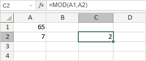

MOD funkcija
MOD funkcija je jedna od matematičkih i trigonometrijskih funkcija. Koristi se za vraćanje ostatka nakon deljenja broja sa navedenim deliocem.
Sintaksa
MOD(number, divisor)
MOD funkcija ima sledeće argumente:
| Argument | Opis |
|---|---|
| number | Broj koji želite da delite i za koji želite da pronađete ostatak. |
| divisor | Broj kojim želite da delite. |
Napomene
Ako je divisor 0, funkcija vraća #DIV/0! grešku.
Kako primeniti MOD funkciju.
Primeri
Slika ispod prikazuje rezultat koji vraća MOD funkcija.
